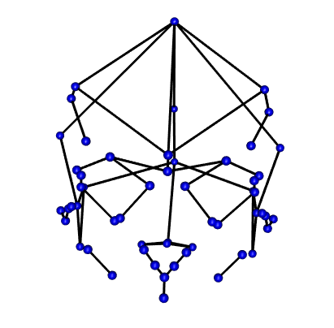
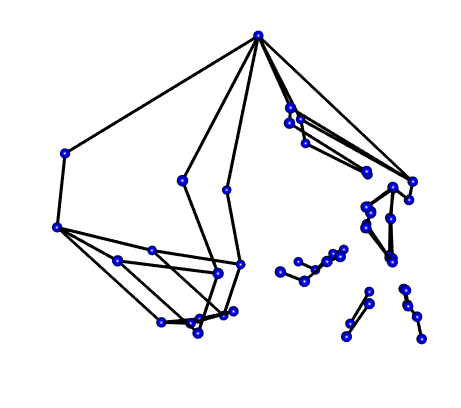

require(geomorph) #for GM analysis
require(SlicerMorphR) #for importing Slicer data
require(plyr) #for wireframe specs
require(dplyr) #for data processing/cleaning
require(tidyr) #for data processing/cleaning
require(skimr) #for nice visualization of data
require(knitr) #for qmd buildingData Processing
Workflow
Data Processing in R Workflow
Purpose and Design
This page is a short overview of the SlicerMorph data and a walkthrough of how it was prepared for detailed analysis in r. It illustrates the processes of importing data, merging it with demographic qualifiers, and organizing it into an array that can be read and manipulated with the geomorph package.
This markdown file utilizes codechunks.
Load needed packages
Importing Data
The process for imported Slicer Data into a workable format in R was followed from the SlicerMorph/Tutorials page at https://github.com/SlicerMorph/Tutorials/blob/main/GPA_3/parser_and_sample_R_analysis.md. The instructions provided by this page were followed closely and adjusted if/when they did not provide the needed results.
The primary file needed from the slicer export is the analysis.log file. This contains all of the objects generated by SlicerMorph’s GPA Module. These objects are parsed by parser() and stored in the SM.log list as individual objects. The SlicerMorph Tutorial suggests using parser2() for this process but this did not work for my files (hence the use of parser().
SM.log.file = "Data/Analysis_8-15/analysis.log"
SMlog <- parser(SM.log.file)Warning in readLines(file): incomplete final line found on
'Data/Analysis_8-15/analysis.log'head(SMlog)$input.path
[1] "C:/Users/danny/Documents/git/Research_Methods/Data/Coordinates"
$output.path
[1] "C:/Users/danny/Documents/git/Research_Methods/Data/Analysis_8-15"
$files
[1] "LM_1575.fcsv" "LM_1601.fcsv" "LM_2270.fcsv" "LM_2274.fcsv" "LM_2294.fcsv"
[6] "LM_2303.fcsv" "LM_2317.fcsv" "LM_2343.fcsv" "LM_2368.fcsv" "LM_2380.fcsv"
[11] "LM_2458.fcsv" "LM_2463.fcsv" "LM_2467.fcsv" "LM_2487.fcsv" "LM_2508.fcsv"
$format
[1] ".fcsv"
$no.LM
[1] 55
$skipped
[1] FALSEsave_data_location<-"Data/Processed_data/SMlog.rds"
saveRDS(SMlog, file=save_data_location)
SM_output <- read.csv(file=paste(SMlog$output.path,
SMlog$OutputData,
sep = "/"))
save_data_location<-"Data/Processed_data/SM_output.rds"
saveRDS(SM_output, file=save_data_location)
SlicerMorph_PCs <- read.table(file = paste(SMlog$output.path,
SMlog$pcScores,
sep="/"),
sep=",", header = TRUE, row.names=1)
save_data_location<-"Data/Processed_data/SlicerMorph_PCs.rds"
saveRDS(SlicerMorph_PCs, file=save_data_location)
PD <- SM_output[,2]
if (!SMlog$skipped) {
no.LM <- SMlog$no.LM
} else {
no.LM <- SMlog$no.LM - length(SMlog$skipped.LM)
}
save_data_location<-"Data/Processed_data/PD.rds"
saveRDS(PD, file=save_data_location)
dem<-read.csv(paste("Data/dem.csv", sep=""))
dem ID Sex Age Ancestry
1 LM_1575 Male 60-70 Mix
2 LM_1601 Female 70-80 Caucasian
3 LM_2270 Male 70-80 Mix
4 LM_2274 Female 80-90 Mix
5 LM_2294 Female 80-90 Korean
6 LM_2303 Male 70-80 Caucasian
7 LM_2317 Male 60-70 Caucasian
8 LM_2343 Female 90-100 Japanese
9 LM_2463 Female 70-80 Portuguese
10 LM_2467 Female 70-80 Caucasian
11 LM_2380 Male 90-100 Caucasian
12 LM_2368 Female 50-60 Mix
13 LM_2458 Male 80-90 Caucasian
14 LM_2487 Male 80-90 Caucasian
15 LM_2508 Male 70-80 CaucasianMerging Demographic data with Landmark data
The SlicerMorph GPA module worked well to identify Procrustes Distances and develop PCAs but was not able to show where the sample variation came from. To highlight the significance of these results I developed an Excel spreadsheet with data on each individual’s Age, Sex, and Ancestry. This data then needed to be imported into r and merged with the SM.output landmark data.
The following tables illustrate the first 6 rows of the merged data. The demographic information was stored as factors, the first to numeric variables after these (columns 5 and 6) came from the original SlicerMorph analysis and account for the Procrustes Distances and Centeroids. The rest of the data (masked from this table to save space) is the coordinate data.
dat<- merge(SM_output, dem, by= "ID")
dat$ID <- as.factor(dat$ID)
dat$Sex <- as.factor(dat$Sex)
dat$Age <- as.factor(dat$Age)
dat$Ancestry <- as.factor(dat$Ancestry)
plot(dat$Ancestry)
d1 <- dat %>% relocate(where(is.factor), .before = proc_dist)
skim(d1[1:6], )| Name | d1[1:6] |
| Number of rows | 15 |
| Number of columns | 6 |
| _______________________ | |
| Column type frequency: | |
| factor | 4 |
| numeric | 2 |
| ________________________ | |
| Group variables | None |
Variable type: factor
| skim_variable | n_missing | complete_rate | ordered | n_unique | top_counts |
|---|---|---|---|---|---|
| ID | 0 | 1 | FALSE | 15 | LM_: 1, LM_: 1, LM_: 1, LM_: 1 |
| Sex | 0 | 1 | FALSE | 2 | Mal: 8, Fem: 7 |
| Age | 0 | 1 | FALSE | 5 | 70-: 6, 80-: 4, 60-: 2, 90-: 2 |
| Ancestry | 0 | 1 | FALSE | 5 | Cau: 8, Mix: 4, Jap: 1, Kor: 1 |
Variable type: numeric
| skim_variable | n_missing | complete_rate | mean | sd | p0 | p25 | p50 | p75 | p100 | hist |
|---|---|---|---|---|---|---|---|---|---|---|
| proc_dist | 0 | 1 | 0.07 | 0.01 | 0.06 | 0.07 | 0.07 | 0.07 | 0.11 | ▇▂▁▁▁ |
| centeroid | 0 | 1 | 0.54 | 0.01 | 0.51 | 0.53 | 0.54 | 0.54 | 0.56 | ▃▅▇▆▂ |
save_data_location<-"Data/Processed_data/output.rds"
saveRDS(d1, file=save_data_location)Build array from Slicer data
To work with coordinate data in r, geomorph requires that the information be formatted into an array by using arrayspecs.
Coords <- arrayspecs(SM_output[,-c(1:3)],
p=no.LM,
k=3)
dimnames(Coords) <- list(1:no.LM,
c("x","y","z"),
SMlog$ID)
save_data_location<-"Data/Processed_data/Coords.rds"
saveRDS(Coords, file=save_data_location)d1array.gpa <- gpagen(Coords, print.progress=FALSE)
save_data_location<-"Data/Processed_data/gpa.rds"
saveRDS(d1array.gpa, file=save_data_location)
summary(d1array.gpa)
Call:
gpagen(A = Coords, print.progress = FALSE)
Generalized Procrustes Analysis
with Partial Procrustes Superimposition
55 fixed landmarks
0 semilandmarks (sliders)
3-dimensional landmarks
2 GPA iterations to converge
Consensus (mean) Configuration
X Y Z
1 0.088944373 0.017112548 -0.041115700
2 0.086713372 -0.027345317 -0.040021395
3 -0.162443890 0.117405845 -0.018763507
4 -0.174582983 -0.097198168 -0.022417884
5 -0.072835774 0.005410136 -0.069411402
6 -0.061195686 0.003623447 0.194245899
7 0.072841404 0.014012998 0.026215460
8 0.070317703 -0.022981056 0.025318686
9 0.055937474 0.090097271 0.019004102
10 0.042264419 -0.095650389 0.016701833
11 0.041823214 0.056701035 -0.079885979
12 0.031724630 -0.059210552 -0.082664696
13 -0.088723351 0.137570447 0.047611249
14 -0.118946520 -0.126509256 0.050197105
15 -0.106340677 0.038772004 -0.080774211
16 -0.111675376 -0.023241438 -0.080421196
17 0.060162857 0.088468310 0.032156854
18 0.045968220 -0.095906425 0.030038061
19 0.056787889 0.093792044 0.037006096
20 0.041374212 -0.100759624 0.034888199
21 0.054626471 0.084012697 0.068863984
22 0.040931330 -0.091916980 0.066414210
23 0.090848557 -0.005977439 0.061501267
24 0.034752009 0.102310323 -0.008181600
25 0.020402348 -0.106164678 -0.009282208
26 -0.242708463 0.017510623 0.074039167
27 0.077062242 0.049744606 -0.013061859
28 0.070255052 -0.058779766 -0.013404260
29 0.078631253 0.055598228 0.055444973
30 0.067061074 -0.065688694 0.054134265
31 -0.085089793 0.110034274 -0.081992605
32 -0.100780129 -0.098243674 -0.082436290
33 -0.008952205 0.110512561 0.098894026
34 -0.029123494 -0.111124422 0.104723166
35 0.092003602 0.004661012 -0.055469829
36 0.090565965 -0.015323603 -0.055366853
37 0.088115891 -0.005829385 0.044062491
38 -0.247452919 0.021116598 0.002338568
39 -0.141391551 0.010524882 -0.083613989
40 -0.070052672 0.110397031 -0.028715450
41 -0.085465394 -0.102537393 -0.029127669
42 0.105687539 -0.005653951 -0.086204524
43 -0.015247706 0.105121853 0.123212577
44 -0.028721660 -0.106831839 0.118379151
45 0.100453940 -0.005586806 -0.065498736
46 -0.010619253 0.121897023 -0.023504552
47 -0.031223312 -0.119754233 -0.024495686
48 0.060985556 0.079391502 -0.048708201
49 0.048934846 -0.086426001 -0.050274464
50 0.076454649 0.043958386 -0.010324984
51 0.070609291 -0.053127943 -0.010492446
52 0.007195879 0.113277545 -0.030760860
53 -0.010007651 -0.113315049 -0.031915608
54 0.024282284 0.107561862 -0.013055180
55 0.008860913 -0.109513011 -0.014027568Mshape.Coords<-mshape(Coords)To visualize the coordinate data (see below) I took the mean shape from the landmarks and plotted them to build a wire fram using d1Links <- define.links(Mshape.Coords, ptsize = 7, links = NULL). This is the code needed to initiate the construction of a wireframe. This code is not saved in my data_processing.r script. If in the code script, the analysis will pause and wait for the construction of a new wireframe each time it is run. Instead I ran the code once and saved the resulting data as a spreadsheet d1Links.csv. This file can be found in the Data folder.


Wireframe from Coordinates